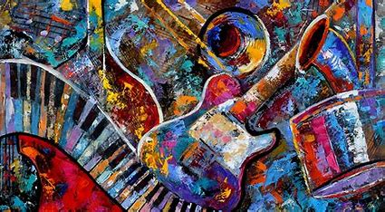

Mia's favorite albums!
If you would like to go back to the main page click here!
One thing I love is music!

Here are some of my favorite albums (in no particular order):
- Evermore by Taylor Swift
- This album has everything I love; beautifully written lyrics, great production, and beautiful storytelling!
- It may actually be my favorite Taylor Swift album!
- You will love it if you love acoustic ballads with great songwriting, making you feel like you are in the world of the writer.
- Listen to it below!
- Channel Orange by Frank Ocean
- I am a huge Frank Ocean fan, and while I love his other album, Blonde, the storytelling and worldbuilding of Channel Orange are unmatched.
- This album tells stories with subjects ranging from Ancient Egypt to New York's elite, and does it in a way that makes the listener truly connect with the story.
- Here is the tracklist, along with some lyrical analysis.
- Listen to it below!
- American Teen by Khalid
- This album, which was released when Khalid was only ninteen is very different from the other two.
- It may not have the complex songwriting of the other two, but it perfectly captures the emotions of growing up and coming of age in the 21st century.
- I loved it so much, I bought the vinyl!
- Listen to it below!